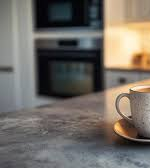
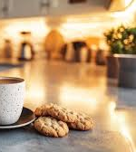

Conocé
NUESTRA HISTORIA
Todo empezó en Uruguay por el 2021, cuando el grupo "Sub21" decidió tirar una idea sobre la mesa. Lo que arrancó como un proyecto entre amigos para divertirse y pasar el rato, terminó transformándose en algo inesperado. Aunque algunos quedaron por el camino, Isaias Blanco y Mathias Aizpun se mantuvieron al pie del cañón, impulsados por la pasión y las ganas de crear algo auténtico.
Con los años, Alta Pinta se volvió un referente por su café de excelencia y una atención "muy piola". A pesar de las ofertas para internacionalizarnos, elegimos mantener la exclusividad de nuestra casa, porque para nosotros, el motor siempre fue la amistad y el arte del buen café, nunca la plata.

